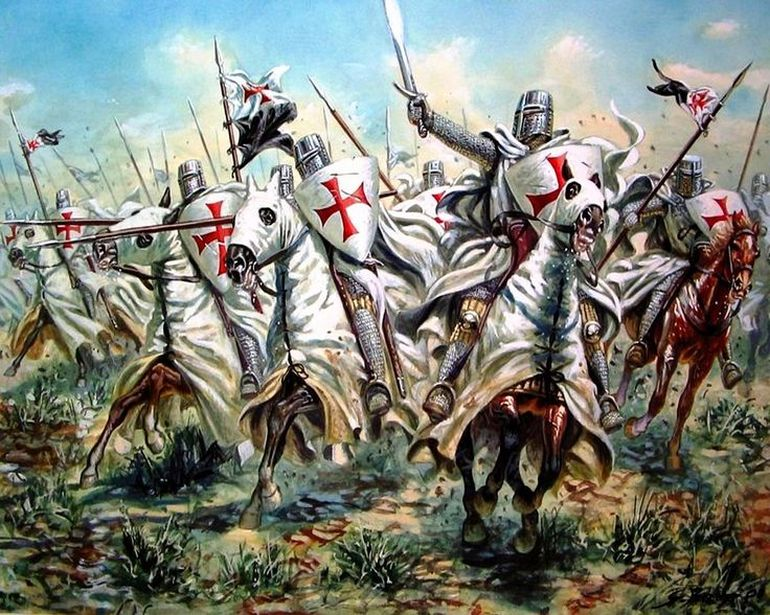

Who were the Templars?
The Knights Templar was a Christian military order that was founded in 1119 by the French knight Hugues de Payens to protect those on pilgrimages to the Holy Land from Muslims in the lands they had to pass through to get there (Wikipedia). Initially, the order was named the Poor Knights of the Temple of King Solomon, after the location that their order was operated out of, the Al-Aqsa Mosque in Jerusalem, which was believed to be the ruins of Solomon's Temple (Wikipedia).
A Rough Start
As aforementioned, the original name of the Knights Templar was the Poor Knights of the Temple of King Solomon. As the name implies, the order was not very well funded in the first few years of it's existence. With the original nine members supposedly so poor that they initally had only one horse (Defending Crusader Kingdoms). However, this changed once the order began to gain new members and gained endorsement from the church from Saint Bernard of Clairvaux, a strong advocate of the order (Wikipedia).
Life in the Order
Similarly to how monks have to follow specific rules in their daily lives, the members of the Knights Templar "lived by the same Rule as canons at the Church of the Holy Sepulcher, where they first found shelter," along with an additional 79 rules that were added at the Council of Troyes (Erenow). The final Rule that the Knights Templar became known as the Latin Rule.
The basics of a member's life in the Order included attending the citing of the monsatic hours, meeting once a week in Chapter to recieve assignments and discipline, wearing specific clothing according to status and time of the year, along with being able to eat meat up to three times a week (Erenow).
Ranks
Grand Master
The Grand Master was the highest ranking official in the Knights Templar. Their responsibilities consisted of maintaining the Order across
the world, and were give office for life.
Master and Commander
commander of a commandery (Templar stronghold). Had authority over their men in combat.
Seneschal a.k.a Grand Commander "Right-hand man for the Master" - was in charge of all lands associated to their chapter house in peace time and logistics during war.
Turcopolier Commanded Light Cavalry and Sergeants
Marshal Charged with taking care of all arms and horses. Was consulted along with Seneschal and Turcopolier on tactics.
Under-Marshal In charge of the "lesser equipment" such as bridles and their padding, barrels of water, and related supplies. In battle they were in charge of holdin gthe piebald banner, which was held at the very front to keep everyone together.
Standard Bearer a.k.a Confanonier In charge of the squires (knight's assistant) and ensured knight's equipment was in good condition. In battle they would march in front of the banner and lead their column.
Knight Essentially the Cavalry of the order. Only someone who's grandfather and father were knights. Dressed in a "whit habit adorned with a red cross.
Sergeant Supported the Knights on the battlefield. Dressed in a black tunic and a "black or brown mantle, often with a red cross". They were typicall from a lesser class than the knights.
Treasurer In charge of finances.
Draper Took care of the clothing and bed linings for everyone. They were able to criticize members of any rank if their clothing was not right.
Squire An assistant to a knight. In the beginning of the Order, they were hired. Later on they were able to become a knight.
Lay Servant Took care of things such as hiring masons to repair or build things to being a personal servant to an officer.
Chaplain In essence the priest of the Order. They could only answer directly to the Pope.
Commanders of the Lands Were responsible for the properties under their jurisdtiction.
Provincial Masters Similar to the Commanders of the Lands, but were mainly in the west. Their main responsibilities were to manage revenue and recruit new members.
Source for Rankings: Sword Blog
Magna Phasellus
Ipsum Dolor
Vehicula fermentum ligula at pretium. Suspendisse semper iaculis eros, eu aliquam iaculis. Phasellus ultrices diam sit amet orci lacinia sed consequat.